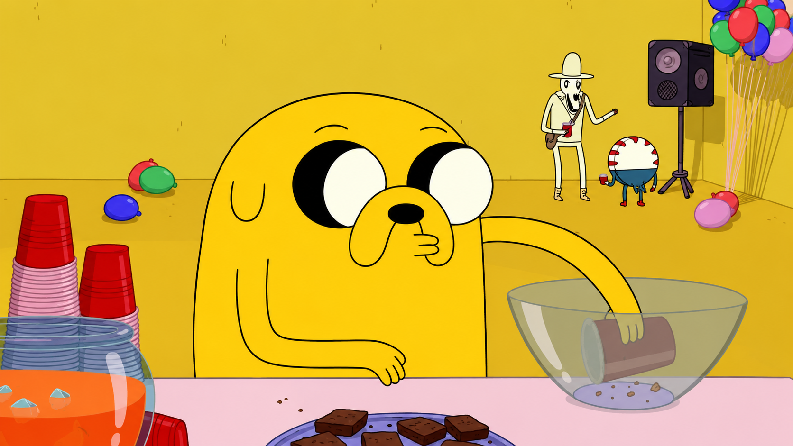

Sobre Jake el perro
Jake el Perro es el hermano adoptivo, mejor amigo y compañero inseparable de aventuras de Finn en la Tierra de Ooo. Es un bulldog mágico con la habilidad de estirar, encoger y moldear su cuerpo en prácticamente cualquier forma o tamaño, un poder que obtuvo tras haber estado en contacto con un charco de barro mágico durante su infancia (aunque su verdadero origen está ligado a una criatura extraterrestre cambiante). Relajado, sabio a su manera y apasionado por la cocina y la viola, Jake suele equilibrar el entusiasmo impulsivo de Finn con consejos filosóficos y humor, sin dudar jamás en arriesgarlo todo para proteger a su familia, a su pareja Arcoiris y a sus hijos.